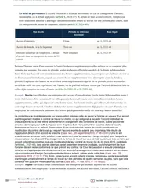

Le harcèlement moral au travail, la définition et les sanctions
L'article L1152-1 du Code du travail interdit les agissements répétés qui dégradent tes conditions de travail au point de porter atteinte à ta dignité, à ta santé ou à ton avenir professionnel. Trois conditions suffisent à caractériser ce harcèlement, et l'intention de nuire de son auteur n'en fait pas partie. La loi protège ensuite le salarié à trois niveaux, un régime de preuve aménagé en ta faveur, la nullité du licenciement qui suivrait ta dénonciation, et des sanctions pénales qui vont jusqu'à deux ans de prison.

L'essentiel en une phrase
Le harcèlement moral au travail désigne des actes répétés qui, en s'accumulant, dégradent les conditions de travail d'un salarié au point de menacer sa santé, sa dignité ou son avenir dans l'entreprise. Le salarié n'a pas à prouver que son employeur ou un collègue voulait lui nuire. La loi regarde en effet le résultat produit sur lui, ou même le simple risque de ce résultat, et c'est ce qui guide ton raisonnement en cas pratique.
Chaque année, des étudiants confondent le harcèlement moral avec un simple conflit de travail ou une pression normale de la hiérarchie. Or un supérieur exigeant, même désagréable, ne harcèle pas forcément ses subordonnés. Le harcèlement suppose des actes répétés, qui dégradent réellement les conditions de travail et qui menacent la santé ou la dignité du salarié. Tout le contentieux porte donc sur cette frontière entre un management dur et un harcèlement caractérisé.
En cas pratique, tu vérifies les trois conditions de l'article L1152-1 dans l'ordre. D'abord, les agissements doivent être répétés. Ensuite, ils doivent avoir pour objet ou pour effet de dégrader les conditions de travail. Enfin, ils doivent risquer de porter atteinte à la personne du salarié. L'intention de nuire de l'auteur ne fait pas partie de ces conditions, car la jurisprudence l'a écartée depuis longtemps.

Fiche complète
Droit du travail L3
La définition légale, les 3 conditions de l'article L1152-1
Le Code du travail définit le harcèlement moral dans un seul article, rédigé en termes larges pour couvrir des situations très différentes. L'article L1152-1 dispose qu'aucun salarié ne doit subir les agissements répétés de harcèlement moral qui ont pour objet ou pour effet une dégradation de ses conditions de travail susceptible de porter atteinte à ses droits et à sa dignité, d'altérer sa santé physique ou mentale, ou de compromettre son avenir professionnel. Pour appliquer ce texte à un cas concret, tu vérifies donc trois conditions, qui doivent être réunies en même temps.
Des agissements répétés. Un acte isolé ne suffit pas, même s'il est grave. La Cour de cassation l'a rappelé, puisqu'il faut au moins deux actes distincts pour parler de harcèlement moral (Cass. soc., 15 avril 2008, n° 07-40.290). Ces actes peuvent d'ailleurs être de nature très différente, par exemple une remarque humiliante, puis une mise à l'écart ou une surcharge de travail imposée sans raison. Leur accumulation compte alors davantage que la gravité de chacun pris séparément.
Un objet ou un effet de dégradation. La loi retient une définition objective, si bien que le salarié n'a pas à démontrer que son employeur ou son collègue cherchait à lui nuire. La chambre sociale de la Cour de cassation l'a précisé dès 2009, le harcèlement moral existe quelle que soit l'intention de son auteur (Cass. soc., 10 novembre 2009, n° 08-41.497). Des méthodes de gestion appliquées sans volonté de blesser peuvent donc constituer un harcèlement, dès lors qu'elles dégradent réellement les conditions de travail.
Une atteinte possible à la personne du salarié. La loi vise en effet plusieurs conséquences possibles, puisque les agissements peuvent porter atteinte aux droits et à la dignité du salarié, altérer sa santé physique ou mentale, ou compromettre son avenir professionnel. Le mot « susceptible » compte ici, car il suffit que les faits fassent courir ce risque. Le salarié n'a donc pas besoin d'attendre un arrêt maladie ou un licenciement pour agir.
Le harcèlement managérial mérite une explication à part. Des méthodes de gestion imposées par un supérieur peuvent, à elles seules, constituer un harcèlement moral, même quand elles visent toute une équipe plutôt qu'un salarié en particulier. La Cour de cassation l'a posé dans un arrêt de principe, à condition que ces méthodes dégradent réellement les conditions de travail d'un salarié donné (Cass. soc., 10 novembre 2009, n° 07-45.321). Un arrêt plus récent a encore assoupli ce critère. D'après la chambre sociale, il suffit désormais que le salarié appartienne au groupe de salariés visé par ces méthodes, sans avoir à démontrer qu'il en était la cible personnelle ou principale (Cass. soc., 10 décembre 2025, n° 24-15.412, publié au Bulletin).
Prenons un salarié que son responsable convoque seul dans son bureau chaque semaine pour lui reprocher ses résultats sur un ton humiliant, alors que ses collègues ne subissent jamais ce traitement. Un seul entretien de ce genre resterait discutable, mais il se répète pendant plusieurs semaines. Le salarié souffre ensuite de troubles du sommeil, puis il est placé en arrêt maladie pour anxiété. Les agissements sont donc répétés, ils dégradent réellement ses conditions de travail et ils atteignent sa santé. Les trois conditions sont réunies, même si le responsable affirme n'avoir jamais voulu lui nuire.
Qui doit prouver le harcèlement, le salarié ou l'employeur ?
Cette question revient souvent en cas pratique, et la réponse surprend au premier abord. L'article L1154-1 du Code du travail organise en effet la preuve en deux temps, au lieu de la faire peser entièrement sur une seule partie.
Premier temps, le salarié. Le salarié présente d'abord des éléments de fait qui laissent supposer un harcèlement. Il n'a donc pas à prouver le harcèlement lui-même, seulement à réunir des indices sérieux, par exemple des mails ou des attestations de collègues, mais aussi des arrêts maladie liés au travail ou un compte rendu d'entretien. La Cour de cassation exige que ces éléments soient examinés ensemble. Un arrêt récent l'a rappelé. Une cour d'appel qui examine chaque fait isolément avant d'écarter le harcèlement se trompe de méthode, car ces mêmes faits, pris ensemble, peuvent convaincre le juge (Cass. soc., 11 mars 2026).
Second temps, l'employeur. Une fois ces éléments présentés, c'est à l'employeur de prouver. Il doit en effet démontrer que les faits en cause ne constituent pas un harcèlement, et qu'ils s'expliquent par des raisons objectives sans rapport avec un harcèlement (Cass. soc., 1er février 2011, n° 09-72.836). La preuve reste donc partagée en deux temps, et l'employeur peut toujours se justifier. Il doit seulement apporter cette justification lui-même, alors qu'en principe, c'est à celui qui demande quelque chose en justice de prouver ce qu'il avance.
L'obligation de prévention et de sécurité de l'employeur
L'employeur doit aussi empêcher le harcèlement dans son entreprise. L'article L1152-4 du Code du travail lui impose en effet de prendre toutes les dispositions nécessaires pour prévenir les agissements de harcèlement moral. Cette obligation s'ajoute à l'obligation générale de sécurité de l'article L4121-1, qui l'oblige à protéger la santé physique et mentale de chaque salarié.
La responsabilité de l'employeur a évolué avec le temps, et cette évolution tombe souvent en cas pratique. Jusqu'en 2015, la jurisprudence retenait une obligation de résultat. L'employeur était donc responsable dès qu'un harcèlement était constaté dans son entreprise, même s'il avait pris des mesures de prévention. La chambre sociale a ensuite assoupli ce régime, avec une obligation de moyens renforcée (Cass. soc., 25 novembre 2015, n° 14-24.444), qu'elle a étendue au harcèlement moral l'année suivante (Cass. soc., 1er juin 2016, n° 14-19.702). Depuis, l'employeur échappe à sa responsabilité s'il prouve qu'il a pris toutes les mesures de prévention nécessaires, et qu'il a fait cesser immédiatement les agissements dès qu'il en a eu connaissance.
Ainsi, un employeur qui n'a rien prévu et qui ne réagit pas face à un harcèlement reste entièrement responsable. À l'inverse, un employeur qui a mis en place une procédure d'alerte et formé ses managers, puis qui agit vite dès qu'il est informé, peut échapper à sa responsabilité, même si le harcèlement a bien eu lieu. Mon cours de droit du travail L3 reprend ce mécanisme avec l'ensemble du contrat de travail et de sa rupture.
Tu révises ton droit du travail ?
Tu peux recevoir gratuitement mon guide « Réviser le droit sans s'épuiser ». Mes élèves s'en servent pour répartir leurs révisions sur tout le semestre, et ils retiennent ainsi les articles et les arrêts jusqu'au jour du partiel.
La protection du salarié, la nullité du licenciement
La loi protège directement l'emploi du salarié victime ou témoin d'un harcèlement moral. D'après l'article L1152-3 du Code du travail, le licenciement d'un salarié qui a subi ou refusé de subir un harcèlement moral est nul, de même que celui du salarié qui en a témoigné. Ce cas s'ajoute à deux autres causes de nullité du licenciement, la violation d'une liberté fondamentale et la discrimination. Ces trois cas sont sanctionnés plus sévèrement qu'un licenciement seulement dépourvu de cause réelle et sérieuse.
Cette protection vaut aussi quand c'est le salarié qui rompt son contrat à cause d'un harcèlement. Qu'il prenne acte de la rupture ou qu'il demande au juge de résilier le contrat, cette rupture produit en principe les effets d'un licenciement nul, au lieu de ceux d'une démission. Depuis un arrêt de 2014, le juge n'admet toutefois plus automatiquement une prise d'acte au seul motif qu'un harcèlement moral est établi (Cass. soc., 26 mars 2014). Il vérifie au cas par cas que les faits reprochés à l'employeur sont assez graves pour empêcher la poursuite du contrat de travail. Un harcèlement ancien et ponctuel, auquel l'employeur a vite mis fin, peut donc ne pas justifier la prise d'acte, même s'il a bien existé.
Les sanctions civiles et pénales
Le harcèlement moral au travail expose son auteur, et parfois l'entreprise elle-même, à plusieurs sanctions. Il faut les distinguer avec soin, car une erreur circule souvent sur les peines réellement encourues.
Devant le conseil de prud'hommes, le salarié peut demander réparation de son préjudice. Il peut aussi demander, le cas échéant, la nullité de son licenciement, puis sa réintégration ou une indemnité.
Devant le juge pénal, l'article 222-33-2 du Code pénal punit le harcèlement moral au travail de deux ans d'emprisonnement et de 30 000 € d'amende. Certaines sources évoquent pourtant des peines beaucoup plus lourdes quand la victime subit des conséquences graves. Ces peines aggravées existent bien dans le Code pénal, mais elles visent d'autres formes de harcèlement, notamment le harcèlement au sein du couple ou le harcèlement scolaire. L'article 222-33-2 prévoit donc une seule peine, sans aggravation liée à l'état de santé de la victime.
Un autre article punit les représailles contre la victime ou le témoin. L'article L1155-2 du Code du travail punit en effet d'un an d'emprisonnement et de 3 750 € d'amende toute mesure prise contre un salarié parce qu'il a subi, refusé de subir ou dénoncé un harcèlement moral. Ce texte vise donc les mesures prises contre le salarié après les faits, puisque le harcèlement lui-même est déjà puni par l'article 222-33-2.
Harcèlement moral, harcèlement sexuel ou agissement sexiste ?
Trois notions voisines se croisent souvent dans le même contentieux, et tu dois les distinguer en copie. Chacune relève d'un texte différent, avec ses propres conditions et sa propre sanction.
Pour ta copie, la différence tient surtout au nombre de faits exigés. Le harcèlement moral et le harcèlement sexuel supposent en principe des agissements répétés. Pour le harcèlement sexuel, un acte unique suffit pourtant dans un cas, celui d'une pression grave exercée pour obtenir un acte sexuel. L'agissement sexiste, créé par la loi du 17 août 2015, n'exige aucune répétition. Un seul fait humiliant ou intimidant lié au sexe de la personne peut donc suffire.
Le mobbing, le burn-out ou le bore-out reviennent souvent dans les mêmes recherches, mais ce sont des notions de psychologie ou de sociologie, que le droit français ne définit pas. Un épuisement professionnel devient un harcèlement moral seulement s'il résulte d'agissements répétés qui remplissent les trois conditions de l'article L1152-1. Il n'existe aucune présomption entre les deux, si bien que tu vérifies chacune des trois conditions au lieu de t'arrêter au constat d'un épuisement.
Ce qui a changé en 2025 et 2026
Les juges précisent la notion de harcèlement moral chaque année, et deux évolutions récentes te servent pour un sujet d'actualité.
La première concerne le droit pénal. La chambre criminelle de la Cour de cassation a confirmé la condamnation d'anciens dirigeants d'entreprise pour harcèlement moral institutionnel, c'est-à-dire pour une politique de gestion appliquée en connaissance de cause, qui dégrade les conditions de travail de tout ou partie des salariés (Cass. crim., 21 janvier 2025, n° 22-87.145, publié au Bulletin). Cette décision étend donc l'article 222-33-2. Il suffit désormais que l'auteur et la victime appartiennent à la même communauté de travail, même si aucune victime précise n'est visée et même s'ils n'ont aucune relation directe. Tu peux citer cette décision dès qu'un sujet porte sur une politique d'entreprise plutôt que sur un conflit entre deux personnes. Elle a toutefois été rendue en droit pénal, et elle ne change pas directement la définition de l'article L1152-1 appliquée par le conseil de prud'hommes, même si les deux notions restent très proches.
La seconde concerne le harcèlement managérial, déjà évoqué plus haut. Fin 2025, la chambre sociale a assoupli la condition selon laquelle le salarié devait être visé personnellement par des méthodes de gestion dégradantes (Cass. soc., 10 décembre 2025, n° 24-15.412). Il suffit désormais qu'il appartienne au groupe de salariés concerné par ces méthodes, sans en être la cible principale. Cet arrêt va donc plus loin que celui de 2009 sur ce point.
Les réflexes à avoir si tu es concerné
Cette matière sert aussi en dehors des études. Si tu penses subir un harcèlement moral au travail, plusieurs gestes t'aident à préparer ton dossier avant même de saisir un juge.
Garde une trace écrite de chaque incident, en notant sa date et les personnes présentes, puis en décrivant ce qui s'est passé. Les mails et les messages qui montrent la dégradation de tes conditions de travail valent aussi la peine d'être conservés. Ta santé compte tout autant. Un médecin peut constater le lien entre ton état et ton contexte de travail, et un arrêt de travail motivé devient alors un élément de preuve solide. Il vaut mieux enfin alerter ton employeur ou les représentants du personnel avant de saisir le conseil de prud'hommes. L'article L1152-4 l'oblige justement à réagir dès qu'il est informé.
Les erreurs à éviter avec le harcèlement moral
- Exiger une intention de nuire. La définition légale est objective. Tu qualifies donc le harcèlement d'après ses effets, sans chercher les intentions de son auteur.
- Te contenter d'un seul fait isolé. Un acte unique, même grave, ne suffit pas à caractériser un harcèlement moral. Tu vérifies toujours la répétition des faits. Seul le harcèlement sexuel admet, dans un cas, un acte unique.
- Confondre harcèlement managérial et pouvoir de direction ordinaire. Un management exigeant reste licite. Le harcèlement suppose une dégradation réelle des conditions de travail, au-delà de consignes fermes.
- Croire à un renversement total de la charge de la preuve. L'article L1154-1 organise la preuve en deux temps. Le salarié présente des faits qui laissent supposer un harcèlement, puis l'employeur peut se justifier.
- Confondre les peines du harcèlement au travail avec celles du harcèlement au sein du couple. Avant de citer une peine, tu vérifies quel article tu appliques. L'article 222-33-2 punit le harcèlement au travail de deux ans et 30 000 € d'amende, sans aggravation liée à l'état de santé de la victime, alors que d'autres formes de harcèlement en prévoient une.
Questions fréquentes
Quelle est la définition légale du harcèlement moral au travail ?
Qui doit prouver le harcèlement moral, le salarié ou l'employeur ?
Quelles sont les sanctions pénales du harcèlement moral au travail ?
Le licenciement d'un salarié harcelé est-il valable ?

Le harcèlement moral fait partie d'un programme de droit du travail beaucoup plus large.
Ma fiche de droit du travail L3 reprend chaque notion du contrat de travail. Chaque explication y est écrite en mots simples, et tu peux la réutiliser directement en cas pratique.
Voir la fiche de droit du travail L3